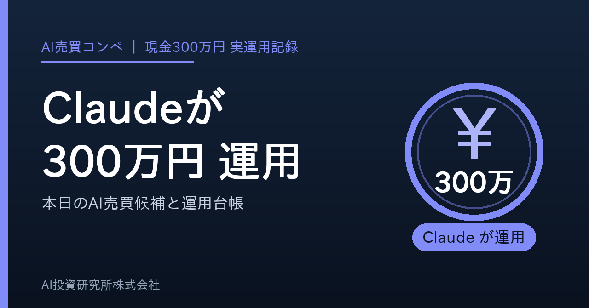
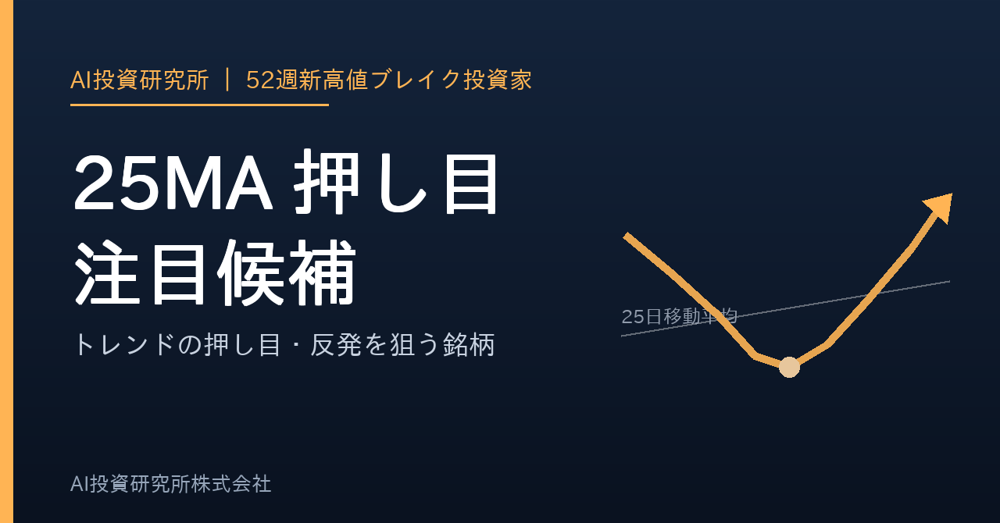
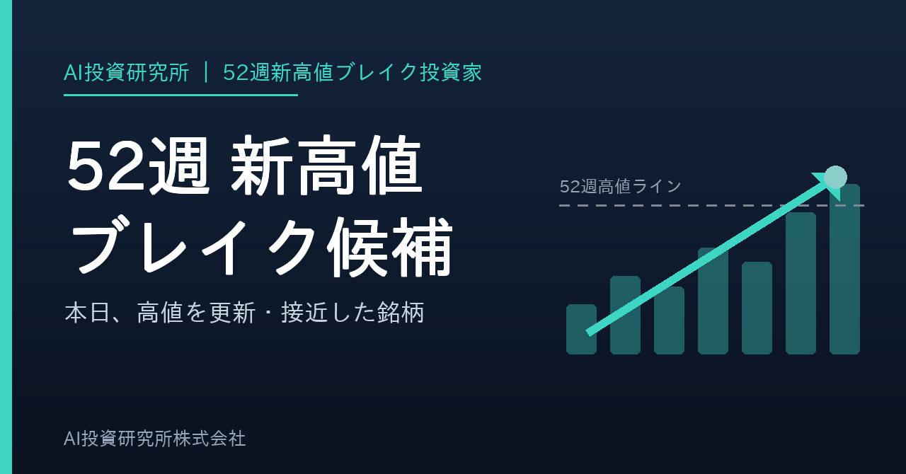

作成: 2026-10-14 01:21 JST ／ ボタンを押すとクリップボードに入ります。noteの新規記事に貼り付けてください。タイトル・本文・タグ・見出し画像を、それぞれ1タップでコピーできます。（ボタンが効かないときは枠の中を長押しして全選択してください）
この本はnote側の下書き保存が未完了です。下のボタンでコピーして、noteの新規記事に貼り付けてください。

ボタンが効かないときは、この画像を長押しして「写真に追加」または「コピー」を選んでください。
ルール：1枠60万円・最大3銘柄 ／ 損切 -5% ／ 利確 +12% ／ 15営業日で手じまい
カプコン 9697 +4,300円 (+1.0%) 2026-10-05 購入
100株 ／ 取得 @4,434円 → 現在 4,477円
ＳＨＯＥＩ 7839 +20,400円 (+4.7%) 2026-10-05 購入
200株 ／ 取得 @2,161円 → 現在 2,263円
現金 2,033,400円
出所 claude_300man_journal.csv（実際に約定した記録だけ）
この運用は「チャートの形」と「出来高・売買代金」だけで銘柄を選んでいます。ニュースの中身や業績の予想では買いません。決算は「発表日が確認できているか」だけを見ます。
カプコン 9697
出来高・規模：25MA押し目+52週押し目・高値距離0.00%・出来高比1.76倍・悪材料ゲート通過
ランク：検証済み押し目Aランク・スコア113（S＝85点以上で必須条件すべて / A＝70点以上 / B＝55点以上）
いつ：2026-10-02 に判断 → 2026-10-05 の寄付きで買付
📈 チャート: https://finance.yahoo.co.jp/quote/9697.T/chart
📊 日経平均と比較（PCで開くと重なります）: https://finance.yahoo.co.jp/quote/9697.T/chart?frm=dly&trm=6m&compare=998407.O
👥 OpenWork: https://www.openwork.jp/search.php?src_str=%E3%82%AB%E3%83%97%E3%82%B3%E3%83%B3
ＳＨＯＥＩ 7839
出来高・規模：25MA押し目+52週押し目・高値距離0.51%・出来高比1.12倍・悪材料ゲート通過
ランク：検証済み押し目Aランク・スコア108（S＝85点以上で必須条件すべて / A＝70点以上 / B＝55点以上）
いつ：2026-10-02 に判断 → 2026-10-05 の寄付きで買付
📈 チャート: https://finance.yahoo.co.jp/quote/7839.T/chart
📊 日経平均と比較（PCで開くと重なります）: https://finance.yahoo.co.jp/quote/7839.T/chart?frm=dly&trm=6m&compare=998407.O
👥 OpenWork: https://www.openwork.jp/search.php?src_str=%EF%BC%B3%EF%BC%A8%EF%BC%AF%EF%BC%A5%EF%BC%A9
手じまい済み
1. 🔵 Aランク 5133 テリロジーホールディングス
📊 スコア 213 💴 378円
📝 52週高値7%以内 / MA25上 / MA75上 / MA200上 / MA25上向き / MA75上向き / 52週高値更新3日以内 / 売買代金3億円以上 / 出来高比2倍以上 / 100株購入額が資金10%以内 / DUKE旧52週高値サポート+100 / Sゲート未達(52週高値3%超)で最大A
2. 🔵 Aランク 5985 サンコール
📊 スコア 185 💴 2,533円
📝 52週高値15%以内 / MA25上 / MA75上 / MA200上 / MA25上向き / MA75上向き / 52週高値更新3日以内 / 売買代金10億円以上 / 出来高増加 / 100株購入額が資金10%以内 / DUKE旧52週高値サポート+85 / Sゲート未達(52週高値3%超・出来高が20日平均以下)で最大A
3. 🔵 Aランク 4477 ＢＡＳＥ
📊 スコア 184 💴 379円
📝 52週高値7%以内 / MA25上 / MA75上 / MA200上 / MA25上向き / MA75上向き / 52週高値更新7日以内 / 売買代金3億円以上 / 出来高増加 / 100株購入額が資金10%以内 / DUKE旧52週高値サポート+85 / Sゲート未達(52週高値3%超・出来高が20日平均以下)で最大A
4. 🔵 Aランク 4419 Ｆｉｎａｔｅｘｔホールディングス
📊 スコア 183 💴 1,534円
📝 52週高値15%以内 / MA25上 / MA75上 / MA200上 / MA25上向き / MA75上向き / 売買代金3億円以上 / 出来高増加 / 100株購入額が資金10%以内 / DUKE旧52週高値サポート+100 / Sゲート未達(52週高値3%超・出来高が20日平均以下)で最大A
5. 🔵 Aランク 6834 精工技研
📊 スコア 179 💴 6,980円
📝 52週高値7%以内 / MA25上 / MA75上 / MA200上 / MA25上向き / MA75上向き / 52週高値更新7日以内 / 売買代金10億円以上 / DUKE旧52週高値サポート+90 / Sゲート未達(52週高値3%超・出来高が20日平均以下)で最大A
6. 🔵 Aランク 6866 日置電機
📊 スコア 165 💴 11,330円
📝 52週高値15%以内 / MA25上 / MA75上 / MA200上 / MA25上向き / 売買代金3億円以上 / 出来高増加 / DUKE旧52週高値サポート+100 / Sゲート未達(52週高値3%超・75日線が上向きでない・出来高が20日平均以下)で最大A
7. 🔵 Aランク 7745 Ａ＆Ｄホロンホールディングス
📊 スコア 156 💴 3,040円
📝 52週高値7%以内 / MA25上 / MA75上 / MA200上 / MA25上向き / MA75上向き / 売買代金1億円以上 / 100株購入額が資金20%以内 / DUKE旧52週高値サポート+80 / Sゲート未達(52週高値3%超・出来高が20日平均以下)で最大A
8. 🔵 Aランク 4258 網屋
📊 スコア 113 💴 6,160円
📝 52週高値3%以内 / MA25上 / MA75上 / MA200上 / MA25上向き / MA75上向き / 52週高値更新3日以内 / 売買代金10億円以上 / 出来高比2倍以上 / 決算未確認で最大A
9. 🔵 Aランク 7537 丸文
📊 スコア 113 💴 1,924円
📝 52週高値3%以内 / MA25上 / MA75上 / MA200上 / MA25上向き / MA75上向き / 52週高値更新3日以内 / 売買代金1億円以上 / 出来高増加 / CWH候補 / 100株購入額が資金10%以内 / Sゲート未達(出来高が20日平均以下)で最大A
10. 🔵 Aランク 8338 筑波銀行
📊 スコア 109 💴 778円
📝 52週高値15%以内 / MA25上 / MA75上 / MA200上 / MA25上向き / MA75上向き / 52週高値更新7日以内 / 売買代金10億円以上 / CWH候補 / テーマ加点:銀行 / 100株購入額が資金10%以内 / Sゲート未達(52週高値3%超・出来高が20日平均以下)で最大A
5133 テリロジーホールディングス ⚡出来高3.64倍
📝 紹介: テリロジーホールディングスは情報・通信業に属する銘柄で、スクリーニング評価はAランク。出来高が平常時の3.6倍に膨らみ、資金が集中。MULTI。
現在値: 378.0円 / 前日比: +5.7%
売買代金: 4.4億円 / 出来高倍率: 3.64x / 値幅: 10.2%
📊 PER 18.5 / PBR 2.00 / 配当 1.53%
💪 ROE 12.7% / 営業利益率 -4.2% / 純利益率 3.2%
🚀 売上 +14.0% (前年比)
🏢 時価総額 62.1億円 / セクター: 情報・通信業
📈 チャート: https://finance.yahoo.co.jp/quote/5133.T/chart
📊 日経平均と比較（PCで開くと重なります）: https://finance.yahoo.co.jp/quote/5133.T/chart?frm=dly&trm=6m&compare=998407.O
5985 サンコール ⚡出来高1.28倍
📝 紹介: サンコールは金属製品に属する銘柄で、スクリーニング評価はAランク。52週高値まであと1.6%、ROE18%と資本効率も高い。MULTI。
現在値: 2,533.0円 / 前日比: +1.8%
売買代金: 17.9億円 / 出来高倍率: 1.28x / 値幅: 7.1%
📊 PER 13.8 / PBR 2.25 / 配当 1.36%
💪 ROE 18.1% / 営業利益率 14.2% / 純利益率 11.5%
🚀 売上 -13.8% (前年比) / 利益 -23.5% (前年比)
🏢 時価総額 795.4億円 / セクター: 金属製品
📈 チャート: https://finance.yahoo.co.jp/quote/5985.T/chart
📊 日経平均と比較（PCで開くと重なります）: https://finance.yahoo.co.jp/quote/5985.T/chart?frm=dly&trm=6m&compare=998407.O
👥 OpenWork: https://www.openwork.jp/search.php?src_str=%E3%82%B5%E3%83%B3%E3%82%B3%E3%83%BC%E3%83%AB
4477 ＢＡＳＥ ⚡出来高1.39倍
📝 紹介: ＢＡＳＥは情報・通信業に属する銘柄で、スクリーニング評価はAランク。ROE15%と資本効率も高い。MULTI。
現在値: 379.0円 / 前日比: -5.5%
売買代金: 7.9億円 / 出来高倍率: 1.39x / 値幅: 5.5%
📊 PER 20.0 / 予想PER 45.7 / PBR 2.85 / 配当 2.51%
💪 ROE 15.4% / 営業利益率 6.6% / 純利益率 9.2%
🚀 売上 +34.4% (前年比) / 利益 +1.4% (前年比)
🗓 決算予定日: 2026-11-05
🏢 時価総額 434.2億円 / セクター: 情報・通信業
📈 チャート: https://finance.yahoo.co.jp/quote/4477.T/chart
📊 日経平均と比較（PCで開くと重なります）: https://finance.yahoo.co.jp/quote/4477.T/chart?frm=dly&trm=6m&compare=998407.O
👥 OpenWork: https://www.openwork.jp/search.php?src_str=%EF%BC%A2%EF%BC%A1%EF%BC%B3%EF%BC%A5
※本日はバックテスト未実施のため、実運用トレードの確定実績（trade_history）を記載します。
※これは投資助言ではなく、スクリーニング結果です。売買判断は自己責任で行ってください。
この本はnote側の下書き保存が未完了です。下のボタンでコピーして、noteの新規記事に貼り付けてください。

ボタンが効かないときは、この画像を長押しして「写真に追加」または「コピー」を選んでください。
52週新高値をブレイクした後、ラインまで戻ってきた「リテスト」候補が131銘柄、上昇トレンド（移動平均線が右肩上がり）のまま25/200/240日線にタッチした押し目候補が172銘柄です。
強い銘柄を高値で追いかけるのではなく、強い銘柄が休んだところを狙うのがこの記事のテーマです。移動平均線が上向きのままのタッチだけを拾うので、下落トレンドの「落ちるナイフ」は含みません。
本日の押し目候補を業種別に数えると、銀行業（30銘柄）、電気機器（29銘柄）、機械（26銘柄）に集まりました。同じ業種に偏っている日は、その業種の地合いに引きずられやすい点に注意してください。
1414 ショーボンドホールディングス ⚡出来高0.98倍
📝 紹介: ショーボンドホールディングスは建設業に属する銘柄で、52W_PULLBACK。
現在値: 1,213.5円 / 前日比: +0.2%
売買代金: 14.6億円 / 出来高倍率: 0.98x / 値幅: 0.8%
📊 PER 16.1 / 予想PER 3.9 / PBR 2.28 / 配当 3.77%
💪 ROE 14.4% / 営業利益率 18.9% / 純利益率 17.3%
🚀 売上 -1.5% (前年比) / 利益 +7.9% (前年比)
🗓 決算予定日: 2026-11-10
🏢 時価総額 2,435.5億円 / セクター: 建設業
📈 チャート: https://finance.yahoo.co.jp/quote/1414.T/chart
📊 日経平均と比較（PCで開くと重なります）: https://finance.yahoo.co.jp/quote/1414.T/chart?frm=dly&trm=6m&compare=998407.O
📐 日経平均に対して：1年レンジの下から8%／比率は25日線 -4.4%・200日線 -18.5%／直近20営業日は下向き（-6.7%）。日経平均自体は上向き（+3.3%）。位置を測った数字で、企業価値の評価ではありません。
1719 安藤・間 ⚡出来高0.81倍
📝 紹介: 安藤・間は建設業に属する銘柄で、ROE16%と資本効率も高い、利益成長+35%と業績も追い風。52W_PULLBACK。
現在値: 1,717.0円 / 前日比: +0.4%
売買代金: 13.9億円 / 出来高倍率: 0.81x / 値幅: 1.0%
📊 PER 8.8 / 予想PER 17.9 / PBR 1.25 / 配当 4.89%
💪 ROE 15.9% / 営業利益率 6.2% / 純利益率 6.8%
🚀 売上 +12.4% (前年比) / 利益 +34.8% (前年比)
🗓 決算予定日: 2026-11-12
🏢 時価総額 2,704.7億円 / セクター: 建設業
📈 チャート: https://finance.yahoo.co.jp/quote/1719.T/chart
📊 日経平均と比較（PCで開くと重なります）: https://finance.yahoo.co.jp/quote/1719.T/chart?frm=dly&trm=6m&compare=998407.O
📐 日経平均に対して：1年レンジの下から10%／比率は25日線 -8.5%・200日線 -19.5%／直近20営業日は下向き（-13.6%）。日経平均自体は上向き（+3.3%）。位置を測った数字で、企業価値の評価ではありません。
👥 OpenWork: https://www.openwork.jp/search.php?src_str=%E5%AE%89%E8%97%A4%E3%83%BB%E9%96%93
1803 清水建設 ⚡出来高0.75倍
📝 紹介: 清水建設は建設業に属する銘柄で、ROE18%と資本効率も高い。52W_PULLBACK。
現在値: 2,028.0円 / 前日比: +0.7%
売買代金: 103.3億円 / 出来高倍率: 0.75x / 値幅: 2.2%
📊 PER 11.0 / 予想PER 24.9 / PBR 1.37 / 配当 3.79%
💪 ROE 17.6% / 営業利益率 4.0% / 純利益率 8.1%
🚀 売上 +9.3% (前年比) / 利益 +4.0% (前年比)
🗓 決算予定日: 2026-11-09
🏢 時価総額 13,774.7億円 / セクター: 建設業
📈 チャート: https://finance.yahoo.co.jp/quote/1803.T/chart
📊 日経平均と比較（PCで開くと重なります）: https://finance.yahoo.co.jp/quote/1803.T/chart?frm=dly&trm=6m&compare=998407.O
📐 日経平均に対して：1年レンジの下から2%／比率は25日線 -11.5%・200日線 -33.4%／直近20営業日は下向き（-22.5%）。日経平均自体は上向き（+3.3%）。位置を測った数字で、企業価値の評価ではありません。
👥 OpenWork: https://www.openwork.jp/search.php?src_str=%E6%B8%85%E6%B0%B4%E5%BB%BA%E8%A8%AD
※ この分類の候補は全131件です。上位3件だけカードで掲載しています（全件はメール添付の screening_pullback_*.csv）。
2109 ＤＭ三井製糖 ⚡出来高0.77倍
📝 紹介: ＤＭ三井製糖は食料品に属する銘柄で、25MA_PULLBACK。
現在値: 3,715.0円 / 前日比: +3.0%
売買代金: 2.2億円 / 出来高倍率: 0.77x / 値幅: 2.9%
📊 PER 27.8 / PBR 1.03 / 配当 3.85%
💪 ROE 2.3% / 営業利益率 8.6% / 純利益率 2.4%
🚀 売上 -3.3% (前年比) / 利益 +11.8% (前年比)
🏢 時価総額 1,165.3億円 / セクター: 食料品
📈 チャート: https://finance.yahoo.co.jp/quote/2109.T/chart
📊 日経平均と比較（PCで開くと重なります）: https://finance.yahoo.co.jp/quote/2109.T/chart?frm=dly&trm=6m&compare=998407.O
📐 日経平均に対して：1年レンジの下から39%／比率は25日線 -3.8%・200日線 -3.3%／直近20営業日は下向き（-5.2%）。日経平均自体は上向き（+3.3%）。位置を測った数字で、企業価値の評価ではありません。
👥 OpenWork: https://www.openwork.jp/search.php?src_str=%EF%BC%A4%EF%BC%AD%E4%B8%89%E4%BA%95%E8%A3%BD%E7%B3%96
2121 ＭＩＸＩ ⚡出来高0.80倍 💰高配当5.07%
📝 紹介: ＭＩＸＩは情報・通信業に属する銘柄で、52週高値まであと0.8%。25MA_PULLBACK。
現在値: 3,810.0円 / 前日比: +2.4%
売買代金: 11.1億円 / 出来高倍率: 0.80x / 値幅: 2.4%
📊 PER 11.8 / 予想PER 19.8 / PBR 1.32 / 配当 5.07%
💪 ROE 10.9% / 営業利益率 11.5% / 純利益率 11.6%
🚀 売上 +50.3% (前年比) / 利益 +3.3% (前年比)
🗓 決算予定日: 2026-10-30
🏢 時価総額 2,507.9億円 / セクター: 情報・通信業
📈 チャート: https://finance.yahoo.co.jp/quote/2121.T/chart
📊 日経平均と比較（PCで開くと重なります）: https://finance.yahoo.co.jp/quote/2121.T/chart?frm=dly&trm=6m&compare=998407.O
📐 日経平均に対して：1年レンジの下から59%／比率は25日線 +1.2%・200日線 +18.5%／直近20営業日は上向き（+6.6%）。日経平均自体は上向き（+3.3%）。位置を測った数字で、企業価値の評価ではありません。
👥 OpenWork: https://www.openwork.jp/search.php?src_str=%EF%BC%AD%EF%BC%A9%EF%BC%B8%EF%BC%A9
2334 イオレ ⚡出来高0.94倍
📝 紹介: イオレはサービス業に属する銘柄で、25MA_PULLBACK。
現在値: 579.0円 / 前日比: -1.4%
売買代金: 3.9億円 / 出来高倍率: 0.94x / 値幅: 1.9%
📊 PBR 5.60 / 配当 0.00%
💪 ROE -21.6% / 営業利益率 2.4% / 純利益率 -2.9%
🚀 売上 +4.5% (前年比) / 利益 -70.2% (前年比)
🏢 時価総額 247.0億円 / セクター: サービス業
📈 チャート: https://finance.yahoo.co.jp/quote/2334.T/chart
📊 日経平均と比較（PCで開くと重なります）: https://finance.yahoo.co.jp/quote/2334.T/chart?frm=dly&trm=6m&compare=998407.O
📐 日経平均に対して：1年レンジの下から50%／比率は25日線 -1.1%・200日線 +7.6%／直近20営業日は横ばい（+0.3%）。日経平均自体は上向き（+3.3%）。位置を測った数字で、企業価値の評価ではありません。
👥 OpenWork: https://www.openwork.jp/search.php?src_str=%E3%82%A4%E3%82%AA%E3%83%AC
※ この分類の候補は全137件です。上位3件だけカードで掲載しています（全件はメール添付の screening_pullback_*.csv）。
1945 東京エネシス ⚡出来高0.90倍
📝 紹介: 東京エネシスは建設業に属する銘柄で、200MA_TOUCH。
現在値: 2,056.0円 / 前日比: -0.2%
売買代金: 2.8億円 / 出来高倍率: 0.90x / 値幅: 2.1%
📊 PER 15.8 / 予想PER 32.2 / PBR 0.95 / 配当 3.76%
💪 ROE 6.2% / 営業利益率 4.7% / 純利益率 5.0%
🚀 売上 +31.6% (前年比) / 利益 +13.4% (前年比)
🏢 時価総額 685.9億円 / セクター: 建設業
📈 チャート: https://finance.yahoo.co.jp/quote/1945.T/chart
📊 日経平均と比較（PCで開くと重なります）: https://finance.yahoo.co.jp/quote/1945.T/chart?frm=dly&trm=6m&compare=998407.O
📐 日経平均に対して：1年レンジの下から14%／比率は25日線 -4.6%・200日線 -8.0%／直近20営業日は下向き（-7.9%）。日経平均自体は上向き（+3.3%）。位置を測った数字で、企業価値の評価ではありません。
👥 OpenWork: https://www.openwork.jp/search.php?src_str=%E6%9D%B1%E4%BA%AC%E3%82%A8%E3%83%8D%E3%82%B7%E3%82%B9
3104 富士紡ホールディングス ⚡出来高1.19倍
📝 紹介: 富士紡ホールディングスは繊維製品に属する銘柄で、200MA_TOUCH。
現在値: 3,650.0円 / 前日比: -3.2%
売買代金: 5.3億円 / 出来高倍率: 1.19x / 値幅: 3.6%
📊 PER 20.9 / 予想PER 9.3 / PBR 2.32 / 配当 2.06%
💪 ROE 11.7% / 営業利益率 18.8% / 純利益率 12.3%
🚀 売上 +17.1% (前年比) / 利益 +18.6% (前年比)
🏢 時価総額 1,218.9億円 / セクター: 繊維製品
📈 チャート: https://finance.yahoo.co.jp/quote/3104.T/chart
📊 日経平均と比較（PCで開くと重なります）: https://finance.yahoo.co.jp/quote/3104.T/chart?frm=dly&trm=6m&compare=998407.O
📐 日経平均に対して：1年レンジの下から36%／比率は25日線 +6.1%・200日線 -7.9%／直近20営業日は上向き（+5.6%）。日経平均自体は上向き（+3.3%）。位置を測った数字で、企業価値の評価ではありません。
4186 東京応化工業 ⚡出来高1.11倍
📝 紹介: 東京応化工業は化学に属する銘柄で、ROE19%と資本効率も高い、利益成長+42%と業績も追い風。200MA_TOUCH。
現在値: 8,937.0円 / 前日比: -2.8%
売買代金: 70.7億円 / 出来高倍率: 1.11x / 値幅: 3.1%
📊 PER 27.1 / 予想PER 46.5 / PBR 4.39
💪 ROE 19.4% / 営業利益率 19.0% / 純利益率 15.1%
🚀 売上 +26.6% (前年比) / 利益 +42.2% (前年比)
🗓 決算予定日: 2026-11-10
🏢 時価総額 10,886.6億円 / セクター: 化学
📈 チャート: https://finance.yahoo.co.jp/quote/4186.T/chart
📊 日経平均と比較（PCで開くと重なります）: https://finance.yahoo.co.jp/quote/4186.T/chart?frm=dly&trm=6m&compare=998407.O
📐 日経平均に対して：1年レンジの下から38%／比率は25日線 +3.5%・200日線 -7.9%／直近20営業日は上向き（+3.3%）。日経平均自体は上向き（+3.3%）。位置を測った数字で、企業価値の評価ではありません。
👥 OpenWork: https://www.openwork.jp/search.php?src_str=%E6%9D%B1%E4%BA%AC%E5%BF%9C%E5%8C%96%E5%B7%A5%E6%A5%AD
※ この分類の候補は全22件です。上位3件だけカードで掲載しています（全件はメール添付の screening_pullback_*.csv）。
4063 信越化学工業 ⚡出来高0.79倍 🔁 25日線にも同時タッチ
📝 紹介: 信越化学工業は化学に属する銘柄で、25MA_PULLBACK。
現在値: 6,022.0円 / 前日比: -0.2%
売買代金: 376.5億円 / 出来高倍率: 0.79x / 値幅: 1.6%
📊 PER 24.0 / 予想PER 18.4 / PBR 2.48 / 配当 1.91%
💪 ROE 11.2% / 営業利益率 26.2% / 純利益率 18.4%
🚀 売上 +5.4% (前年比) / 利益 +5.7% (前年比)
🗓 決算予定日: 2026-10-27
🏢 時価総額 110,251.3億円 / セクター: 化学
📈 チャート: https://finance.yahoo.co.jp/quote/4063.T/chart
📊 日経平均と比較（PCで開くと重なります）: https://finance.yahoo.co.jp/quote/4063.T/chart?frm=dly&trm=6m&compare=998407.O
📐 日経平均に対して：1年レンジの下から6%／比率は25日線 +0.5%・200日線 -13.5%／直近20営業日は上向き（+1.9%）。日経平均自体は上向き（+3.3%）。位置を測った数字で、企業価値の評価ではありません。
👥 OpenWork: https://www.openwork.jp/search.php?src_str=%E4%BF%A1%E8%B6%8A%E5%8C%96%E5%AD%A6%E5%B7%A5%E6%A5%AD
4109 ステラ ケミファ ⚡出来高1.02倍 🔁 25日線にも同時タッチ
📝 紹介: ステラ ケミファは化学に属する銘柄で、利益成長+28%と業績も追い風。25MA_PULLBACK。
現在値: 5,350.0円 / 前日比: -1.8%
売買代金: 2.3億円 / 出来高倍率: 1.02x / 値幅: 2.6%
📊 PER 19.3 / 予想PER 18.3 / PBR 1.37 / 配当 3.30%
💪 ROE 7.2% / 営業利益率 12.7% / 純利益率 8.8%
🚀 売上 +10.9% (前年比) / 利益 +27.8% (前年比)
🏢 時価総額 640.5億円 / セクター: 化学
📈 チャート: https://finance.yahoo.co.jp/quote/4109.T/chart
📊 日経平均と比較（PCで開くと重なります）: https://finance.yahoo.co.jp/quote/4109.T/chart?frm=dly&trm=6m&compare=998407.O
📐 日経平均に対して：1年レンジの下から5%／比率は25日線 -1.6%・200日線 -12.8%／直近20営業日は下向き（-3.4%）。日経平均自体は上向き（+3.3%）。位置を測った数字で、企業価値の評価ではありません。
4966 上村工業 ⚡出来高1.55倍 🔁 25日線にも同時タッチ
📝 紹介: 上村工業は化学に属する銘柄で、出来高1.6倍と商いを伴う動き、利益成長+28%と業績も追い風。25MA_PULLBACK。
現在値: 20,460.0円 / 前日比: -4.4%
売買代金: 12.4億円 / 出来高倍率: 1.55x / 値幅: 4.3%
📊 PER 21.9 / 予想PER 25.8 / PBR 2.83 / 配当 1.37%
💪 ROE 13.7% / 営業利益率 22.0% / 純利益率 15.3%
🚀 売上 +29.6% (前年比) / 利益 +28.5% (前年比)
🏢 時価総額 3,237.6億円 / セクター: 化学
📈 チャート: https://finance.yahoo.co.jp/quote/4966.T/chart
📊 日経平均と比較（PCで開くと重なります）: https://finance.yahoo.co.jp/quote/4966.T/chart?frm=dly&trm=6m&compare=998407.O
📐 日経平均に対して：1年レンジの下から35%／比率は25日線 +0.1%・200日線 -13.2%／直近20営業日は上向き（+2.9%）。日経平均自体は上向き（+3.3%）。位置を測った数字で、企業価値の評価ではありません。
👥 OpenWork: https://www.openwork.jp/search.php?src_str=%E4%B8%8A%E6%9D%91%E5%B7%A5%E6%A5%AD
※ この分類の候補は全13件です。上位3件だけカードで掲載しています（全件はメール添付の screening_pullback_*.csv）。
掲載した押し目候補がその後どう動いたかを、毎営業日同じ基準で機械集計しています（勝率＝掲載日終値より上昇した割合）。
| 期間 | 銘柄数 | 勝率 | 平均騰落率 | 最大 | 最小 |
|---|---|---|---|---|---|
| 翌営業日 | 10078 | 49.2% | +0.01% | +26.46% | -15.48% |
| 5営業日後 | 9004 | 48.7% | +0.07% | +103.89% | -45.45% |
| 20営業日後 | 4239 | 41.1% | +0.4% | +135.88% | -51.66% |
分類別の20営業日後の成績です。どのタッチが効いているかを毎日そのまま出します。
| 分類 | 銘柄数 | 勝率 | 平均騰落率 |
|---|---|---|---|
| 52週新高値後リテスト | 1367 | 26.3% | -1.75% |
| 25MAタッチ | 2514 | 48.5% | +1.39% |
| 200MAタッチ | 223 | 48.0% | +2.06% |
| 240MAタッチ | 135 | 41.5% | +0.81% |
※ 価格データを取得できなかった1539件は集計から除外しています。
この本はnote側の下書き保存が未完了です。下のボタンでコピーして、noteの新規記事に貼り付けてください。

ボタンが効かないときは、この画像を長押しして「写真に追加」または「コピー」を選んでください。
※ 基準日（価格データ最終日 data_as_of）：2026-10-13
※ 対象は直近取引日 2026年10月13日 の日本株データです（生成日と異なります）。
2026年10月13日の日本株で、52週新高値に到達した銘柄は62銘柄、新高値まで3%以内に接近した銘柄は69銘柄でした（うち初回ブレイクは6銘柄）。
相場全体では、日経平均は69,030.92（前日比-0.02%）、TOPIXは4,307.00（前日比+0.12%）。VIXは15.44（前日比+1.51%）、SOX指数は12,056.07（前日比-1.48%）、ドル円は158.35（前日比+0.18%）。（取得済みデータに基づく事実。背景の解釈は各自の判断でご確認ください）
新高値圏の候補を業種別に集計すると、情報・通信業（28銘柄）、卸売業（17銘柄）、サービス業（13銘柄）に集中しました。売買代金の合計ではサービス業が最大で、この記事の候補群の中では資金の向かい先が比較的はっきりした一日です（当スクリーニング内の集計）。
検索トレンド等の外部データは取得していないため、本日の候補データで最も層が厚い「情報・通信業」を軸に確認します。すでに短期資金が集中した銘柄も混ざるため、今回も「初回ブレイク」と「新高値まで3%以内」を分けて掲載します。
| コード | 銘柄 | 現在値 | 前日比% | 高値乖離% | 決算日 | 売買代金 | フラグ |
|---|---|---|---|---|---|---|---|
| 8060 | キヤノンマーケティングジャパン | 3959.0 | 2.83 | 0.03 | 2026-10-26 | 11.7億円 | 初回ブレイク |
| 4684 | オービック | 5325.0 | 0.51 | 0.87 | 2026-10-27 | 77.1億円 | 初回ブレイク |
| 6323 | ローツェ | 5001.0 | -2.59 | 6.84 | 2027-01-08 | 95.8億円 | 初回ブレイク |
| 2146 | ＵＴグループ | 245.0 | 0.82 | 0.0 | 2026-11-13 | 8.8億円 | 未取得 |
| 7864 | フジシールインターナショナル | 3540.0 | 1.14 | 0.14 | 2026-11-11 | 5.4億円 | 未取得 |
| 7832 | バンダイナムコホールディングス | 5930.0 | 1.66 | 0.17 | 2026-11-10 | 133.8億円 | 未取得 |
| 2810 | ハウス食品グループ本社 | 4174.0 | 1.8 | 0.24 | 2026-11-09 | 11.1億円 | 未取得 |
| 8159 | 立花エレテック | 4585.0 | 3.27 | 0.33 | 未取得 | 1.5億円 | 未取得 |
| 6080 | Ｍ＆Ａキャピタルパートナーズ | 4435.0 | 0.23 | 0.45 | 未取得 | 3.8億円 | 連日更新6回/20日 |
| 7510 | たけびし | 2965.0 | 1.37 | 0.54 | 未取得 | 1.5億円 | 未取得 |
| 3156 | レスター | 6510.0 | 0.15 | 0.61 | 未取得 | 6.2億円 | 連日更新8回/20日 |
| 4847 | インテリジェント ウェイブ | 1563.0 | -0.19 | 0.64 | 未取得 | 1.3億円 | 連日更新8回/20日 |
| 9104 | 商船三井 | 7535.0 | 3.21 | 0.69 | 2026-11-09 | 186.4億円 | 未取得 |
| 2371 | カカクコム | 3844.0 | 0.1 | 0.8 | 2026-11-04 | 11.5億円 | 未取得 |
※ この分類は全43銘柄です。優先度の高い14銘柄を表に載せています（全件はメール添付の screening_highs_*.csv）。
株価：3,959.0円
前日比：+2.83%
本日高値：3,960.0円
直前の52週高値：3,960.0円
52週高値までの距離：対象営業日（2026-10-13）に更新
売買代金（20日平均）：11.7億円
出来高倍率（当日/20日平均）：0.86倍
日中値幅：2.29%
業種：卸売業
時価総額：8,166億円
📊 実績PER：18.7倍
📊 予想PER：10.5倍
📊 PBR：2.10倍
📊 予想配当利回り：2.34%
💪 ROE：11.6%
💪 営業利益率：8.3%
💪 純利益率：6.6%
🚀 売上高成長率：前年同期比 +1.0%
🚀 利益成長率：前年同期比 +2.5%
過熱判定：特筆なし
鮮度：初回ブレイク（直近60営業日で初の高値更新）
📅 次回決算：2026年10月26日／あと13日
📅 52週高値日：2026-10-13
🔍 注目ポイント：対象営業日（2026-10-13）の高値で52週レンジの上限を更新しています。直近60営業日で初めての更新（初回ブレイク）で、上値のしこりが比較的軽い局面です。卸売業の一角で、20日平均売買代金12億円と流動性は十分です。直近の売上高は前年同期比+1.0%（yfinance集計）と、業績面の裏付けも確認できます。高値圏で値固めできるか、出来高を伴った続伸があるかを確認していきます。
📈 6ヶ月日足チャート（Yahoo!ファイナンス）: https://finance.yahoo.co.jp/quote/8060.T/chart?frm=dly&trm=6m&scl=stndrd&styl=cndl&evnts=volume&ovrIndctr=sma%2Cmma%2Clma&addIndctr=&compare=
📊 日経平均と比較（PCで開くと重なります）: https://finance.yahoo.co.jp/quote/8060.T/chart?frm=dly&trm=6m&compare=998407.O
📐 日経平均に対して：1年レンジの下から50%／比率は25日線 +5.2%・200日線 +0.1%／直近20営業日は上向き（+8.2%）。日経平均自体は上向き（+3.3%）。位置を測った数字で、企業価値の評価ではありません。
株価：5,325.0円
前日比：+0.51%
本日高値：5,372.0円
直前の52週高値：5,372.0円
52週高値までの距離：対象営業日（2026-10-13）に更新
売買代金（20日平均）：77.1億円
出来高倍率（当日/20日平均）：0.31倍
日中値幅：1.93%
業種：情報・通信業
時価総額：22,895億円
📊 実績PER：29.7倍
📊 予想PER：33.3倍
📊 PBR：4.66倍
📊 予想配当利回り：1.77%
💪 ROE：16.6%
💪 営業利益率：67.7%
💪 純利益率：56.2%
🚀 売上高成長率：前年同期比 +13.2%
🚀 利益成長率：前年同期比 +19.5%
過熱判定：特筆なし
鮮度：初回ブレイク（直近60営業日で初の高値更新）
📅 次回決算：2026年10月27日／あと14日
📅 52週高値日：2026-10-13
🔍 注目ポイント：1年分の高値を上抜け、52週新高値を付けました。直近60営業日で初めての更新（初回ブレイク）で、上値のしこりが比較的軽い局面です。情報・通信業の一角で、20日平均売買代金77億円と流動性は十分です。直近の売上高は前年同期比+13.2%（yfinance集計）と、業績面の裏付けも確認できます。続伸するかよりも、押した時にどこで買いが入るか（25日線など）を観察したい銘柄です。
📈 6ヶ月日足チャート（Yahoo!ファイナンス）: https://finance.yahoo.co.jp/quote/4684.T/chart?frm=dly&trm=6m&scl=stndrd&styl=cndl&evnts=volume&ovrIndctr=sma%2Cmma%2Clma&addIndctr=&compare=
📊 日経平均と比較（PCで開くと重なります）: https://finance.yahoo.co.jp/quote/4684.T/chart?frm=dly&trm=6m&compare=998407.O
📐 日経平均に対して：1年レンジの下から44%／比率は25日線 +4.0%・200日線 +9.2%／直近20営業日は上向き（+6.9%）。日経平均自体は上向き（+3.3%）。位置を測った数字で、企業価値の評価ではありません。
👥 OpenWork: https://www.openwork.jp/search.php?src_str=%E3%82%AA%E3%83%BC%E3%83%93%E3%83%83%E3%82%AF
※ 残り41銘柄は上の一覧表をご覧ください（詳細は優先順位の高い2銘柄に絞っています）。
| コード | 銘柄 | 現在値 | 前日比% | 高値乖離% | 決算日 | 売買代金 | フラグ |
|---|---|---|---|---|---|---|---|
| 3076 | あい ホールディングス | 3035.0 | 1.34 | 0.16 | 未取得 | 2.9億円 | 未取得 |
| 8084 | ＲＹＯＤＥＮ | 2512.0 | 1.21 | 0.32 | 未取得 | 1.9億円 | 未取得 |
| 9722 | 藤田観光 | 3185.0 | -0.47 | 0.47 | 2026-11-05 | 7.8億円 | 未取得 |
| 3864 | 三菱製紙 | 1251.0 | 0.56 | 0.48 | 未取得 | 1.5億円 | 連日更新5回/20日 |
| 2384 | ＳＢＳホールディングス | 5450.0 | 1.68 | 0.55 | 未取得 | 5.0億円 | 未取得 |
| 2914 | 日本たばこ産業 | 7252.0 | 0.3 | 0.62 | 2026-10-29 | 274.9億円 | 未取得 |
| 2664 | カワチ薬品 | 3870.0 | 2.25 | 0.64 | 未取得 | 2.1億円 | 未取得 |
| 9697 | カプコン | 4477.0 | 1.91 | 0.93 | 2026-10-27 | 153.5億円 | 未取得 |
| 7267 | 本田技研工業 | 1749.5 | 1.33 | 0.96 | 2026-11-05 | 234.6億円 | 未取得 |
| 6194 | アトラエ | 948.0 | 0.53 | 1.04 | 未取得 | 2.4億円 | 未取得 |
| 3399 | 丸千代山岡家 | 4545.0 | 1.11 | 1.09 | 未取得 | 4.8億円 | 未取得 |
| 9101 | 日本郵船 | 7503.0 | 1.97 | 1.26 | 2026-11-05 | 179.8億円 | 未取得 |
| 7743 | シード | 784.0 | -0.25 | 1.26 | 未取得 | 2.4億円 | 未取得 |
| 9303 | 住友倉庫 | 4230.0 | 1.68 | 1.28 | 2026-11-05 | 4.3億円 | 未取得 |
※ この分類は全65銘柄です。優先度の高い14銘柄を表に載せています（全件はメール添付の screening_highs_*.csv）。
株価：3,035.0円
前日比：+1.34%
本日高値：3,035.0円
直前の52週高値：3,040.0円
52週高値までの距離：0.16%
売買代金（20日平均）：2.9億円
出来高倍率（当日/20日平均）：0.18倍
日中値幅：0.83%
業種：卸売業
時価総額：1,640億円
📊 実績PER：13.7倍
📊 予想PER：8.8倍
📊 PBR：1.39倍
📊 予想配当利回り：4.67%
💪 ROE：10.4%
💪 営業利益率：10.1%
💪 純利益率：14.0%
🚀 売上高成長率：前年同期比 +29.7%
🚀 利益成長率：前年同期比 -43.0%
過熱判定：特筆なし
📅 次回決算：未公表
📅 52週高値日：2026-09-18
🔍 注目ポイント：52週高値まで残り0.2%の位置につけています。高値更新前の「助走」局面です。業種は卸売業。売買代金は大型株ほど厚くないため、出来高の変化に注意が必要です。直近の売上高は前年同期比+29.7%（yfinance集計）と、業績面の裏付けも確認できます。続伸するかよりも、押した時にどこで買いが入るか（25日線など）を観察したい銘柄です。
📈 6ヶ月日足チャート（Yahoo!ファイナンス）: https://finance.yahoo.co.jp/quote/3076.T/chart?frm=dly&trm=6m&scl=stndrd&styl=cndl&evnts=volume&ovrIndctr=sma%2Cmma%2Clma&addIndctr=&compare=
📊 日経平均と比較（PCで開くと重なります）: https://finance.yahoo.co.jp/quote/3076.T/chart?frm=dly&trm=6m&compare=998407.O
📐 日経平均に対して：1年レンジの下から31%／比率は25日線 +0.0%・200日線 -3.6%／直近20営業日は横ばい（-0.7%）。日経平均自体は上向き（+3.3%）。位置を測った数字で、企業価値の評価ではありません。
株価：2,512.0円
前日比：+1.21%
本日高値：2,519.0円
直前の52週高値：2,520.0円
52週高値までの距離：0.32%
売買代金（20日平均）：1.9億円
出来高倍率（当日/20日平均）：0.36倍
日中値幅：1.69%
業種：卸売業
時価総額：1,064億円
📊 実績PER：19.0倍
📊 PBR：1.13倍
📊 予想配当利回り：4.83%
💪 ROE：6.2%
💪 営業利益率：3.3%
💪 純利益率：2.5%
🚀 売上高成長率：前年同期比 +23.5%
🚀 利益成長率：前年同期比 +41.6%
過熱判定：特筆なし
📅 次回決算：未公表
📅 52週高値日：2026-10-05
🔍 注目ポイント：52週高値まで残り0.3%の位置につけています。高値更新前の「助走」局面です。業種は卸売業。売買代金は大型株ほど厚くないため、出来高の変化に注意が必要です。直近の売上高は前年同期比+23.5%（yfinance集計）と、業績面の裏付けも確認できます。高値圏で値固めできるか、出来高を伴った続伸があるかを確認していきます。
📈 6ヶ月日足チャート（Yahoo!ファイナンス）: https://finance.yahoo.co.jp/quote/8084.T/chart?frm=dly&trm=6m&scl=stndrd&styl=cndl&evnts=volume&ovrIndctr=sma%2Cmma%2Clma&addIndctr=&compare=
📊 日経平均と比較（PCで開くと重なります）: https://finance.yahoo.co.jp/quote/8084.T/chart?frm=dly&trm=6m&compare=998407.O
📐 日経平均に対して：1年レンジの下から95%／比率は25日線 +2.8%・200日線 +15.9%／直近20営業日は上向き（+4.3%）。日経平均自体は上向き（+3.3%）。位置を測った数字で、企業価値の評価ではありません。
👥 OpenWork: https://www.openwork.jp/search.php?src_str=%EF%BC%B2%EF%BC%B9%EF%BC%AF%EF%BC%A4%EF%BC%A5%EF%BC%AE
※ 残り63銘柄は上の一覧表をご覧ください（詳細は優先順位の高い2銘柄に絞っています）。
以下の23銘柄は基準には該当しますが、短期過熱・TOB観測・データ異常の可能性があるため、主要候補から外して参考情報として掲載します。
| コード | 銘柄 | 現在値 | 前日比% | 高値乖離% | 参考掲載の理由 |
|---|---|---|---|---|---|
| 4498 | サイバートラスト | 1861.0 | 18.38 | 5.63 | ⚠️ イナゴ疑い（急騰過熱） |
| 4382 | ＨＥＲＯＺ | 1228.0 | 11.64 | 5.9 | ⚠️ イナゴ疑い（急騰過熱） |
| 5246 | ＥＬＥＭＥＮＴＳ | 1139.0 | 6.95 | 9.24 | ⚠️ イナゴ疑い（急騰過熱） |
| 3042 | セキュアヴェイル | 681.0 | 17.21 | 0.0 | ⚠️ イナゴ疑い（急騰過熱） |
| 7475 | アルビス | 3775.0 | 0.13 | 0.0 | ⚠️ TOB疑い（高値張り付き） |
| 3909 | ショーケース | 469.0 | 20.57 | 0.0 | ⚠️ イナゴ疑い（急騰過熱） |
| 7133 | ＨＹＵＧＡ ＰＲＩＭＡＲＹ ＣＡＲＥ | 2105.0 | 0.0 | 0.09 | ⚠️ TOB疑い（高値張り付き） |
| 9110 | ＮＳユナイテッド海運 | 10520.0 | 0.1 | 0.19 | ⚠️ TOB疑い（高値張り付き） |
| 3132 | マクニカホールディングス | 4832.0 | 4.27 | 0.31 | ⚠️ 連日更新11回/20日 |
| 3676 | デジタルハーツホールディングス | 1052.0 | 0.19 | 0.75 | ⚠️ TOB疑い（高値張り付き） |
| 3762 | テクマトリックス | 3185.0 | 3.24 | 0.93 | ⚠️ イナゴ疑い（急騰過熱） |
| 7552 | ハピネット | 5430.0 | 1.12 | 1.45 | ⚠️ 連日更新10回/20日 |
| 4746 | 東計電算 | 2062.0 | -1.29 | 1.76 | ⚠️ 連日更新11回/20日 |
| 7867 | タカラトミー | 4316.0 | -0.09 | 1.89 | ⚠️ 連日更新10回/20日 |
| 7976 | 三菱鉛筆 | 3535.0 | -0.56 | 1.94 | ⚠️ 連日更新11回/20日 |
| 6533 | Ｏｒｃｈｅｓｔｒａ Ｈｏｌｄｉｎｇｓ | 2217.0 | 0.18 | 2.76 | ⚠️ イナゴ疑い（急騰過熱） |
| 4398 | ブロードバンドセキュリティ | 3165.0 | 12.15 | 4.81 | ⚠️ イナゴ疑い（急騰過熱） |
| 7713 | シグマ光機 | 3325.0 | 7.26 | 5.0 | ⚠️ イナゴ疑い（急騰過熱） |
| 4493 | サイバーセキュリティクラウド | 4175.0 | 12.84 | 5.11 | ⚠️ イナゴ疑い（急騰過熱） |
| 4417 | グローバルセキュリティエキスパート | 7070.0 | 6.32 | 5.61 | ⚠️ イナゴ疑い（急騰過熱） |
| 4884 | クリングルファーマ | 675.0 | 4.65 | 8.16 | ⚠️ イナゴ疑い（急騰過熱） |
| 3753 | フライトソリューションズ | 311.0 | 5.07 | 10.89 | ⚠️ イナゴ疑い（急騰過熱） |
| 3927 | フーバーブレイン | 1266.0 | 5.68 | 13.88 | ⚠️ イナゴ疑い（急騰過熱） |
掲載した銘柄がその後どう動いたかを、毎営業日同じ基準で機械集計しています（勝率＝掲載日終値より上昇した割合）。
| 期間 | 銘柄数 | 勝率 | 平均騰落率 | 最大 | 最小 |
|---|---|---|---|---|---|
| 翌営業日 | 7758 | 46.6% | -0.1% | +28.33% | -34.63% |
| 5営業日後 | 7290 | 44.3% | -0.39% | +51.26% | -41.56% |
| 20営業日後 | 5396 | 48.4% | +0.33% | +129.85% | -51.15% |
うち初回ブレイク銘柄だけに絞ると、5営業日後の勝率は42.9%（203銘柄・平均-0.67%）でした。
※ 価格データを取得できなかった1059件は集計から除外しています。
この本はnote側の下書き保存が未完了です。下のボタンでコピーして、noteの新規記事に貼り付けてください。
※ 基準日（価格データ最終日 data_as_of）：2026-10-13
※ 基準日と異なる行・日付欠損行は3件除外しました。
※ 対象は直近取引日 2026年10月13日 の日本株データです（生成日と異なります）。
本日の集計対象は1569銘柄です。このうち日経平均に対して1年レンジの下にいる順に並べています。
| # | コード | 銘柄名 | 市場 | 日経平均に対する位置 | 比率の25日線 | 比率の200日線 | 直近20営業日 |
|---|---|---|---|---|---|---|---|
| 1 | 5721 | エスクリプトエナジー | 東証スタンダード | 下から0% | -15.3% | -60.9% | -16.0% |
| 2 | 6594 | ニデック | 東証プライム | 下から0% | -26.0% | -31.5% | -30.7% |
| 3 | 6707 | サンケン電気 | 東証プライム | 下から0% | -11.1% | -30.6% | -11.6% |
| 4 | 6616 | トレックス・セミコンダクター | 東証プライム | 下から0% | -8.0% | -16.0% | -8.1% |
| 5 | 3664 | ＷＩＺＥ | 東証グロース | 下から0% | -24.5% | -46.0% | -30.3% |
| 6 | 9227 | マイクロ波化学 | 東証グロース | 下から1% | -15.0% | -33.2% | -18.3% |
| 7 | 3903 | ｇｕｍｉ | 東証プライム | 下から1% | -12.3% | -42.2% | -29.4% |
| 8 | 4889 | レナサイエンス | 東証グロース | 下から1% | -12.3% | -39.8% | -18.1% |
| 9 | 3905 | データセクション | 東証グロース | 下から1% | -9.8% | -38.2% | -1.1% |
| 10 | 6269 | 三井海洋開発 | 東証プライム | 下から1% | -8.4% | -37.2% | -15.0% |
| 11 | 7760 | ＩＭＶ | 東証スタンダード | 下から1% | -7.3% | -35.8% | -9.5% |
| 12 | 7003 | 三井Ｅ＆Ｓ | 東証プライム | 下から1% | -9.1% | -35.7% | -16.0% |
| 13 | 4883 | モダリス | 東証グロース | 下から1% | -11.0% | -44.4% | -19.3% |
| 14 | 9412 | スカパーＪＳＡＴ | 東証プライム | 下から1% | -8.6% | -38.6% | -11.6% |
| 15 | 6526 | ソシオネクスト | 東証プライム | 下から1% | -5.5% | -18.7% | +1.9% |
| 16 | 7012 | 川崎重工業 | 東証プライム | 下から2% | -6.9% | -29.8% | -10.2% |
| 17 | 5631 | 日本製鋼所 | 東証プライム | 下から2% | -7.8% | -28.4% | -10.8% |
| 18 | 6632 | ＪＶＣケンウッド | 東証プライム | 下から2% | -4.4% | -25.0% | -3.0% |
| 19 | 8267 | イオン | 東証プライム | 下から2% | -8.4% | -37.9% | -15.1% |
| 20 | 1801 | 大成建設 | 東証プライム | 下から2% | -8.1% | -31.4% | -16.1% |
| 21 | 4825 | ウェザーニューズ | 東証プライム | 下から2% | -7.2% | -17.1% | -9.3% |
| 22 | 7318 | セレンディップ・ホールディングス | 東証グロース | 下から2% | -5.9% | -30.0% | -9.1% |
| 23 | 8746 | ｕｎｂａｎｋｅｄ | 東証スタンダード | 下から2% | -10.9% | -62.8% | -27.1% |
| 24 | 7412 | アトム | 東証スタンダード | 下から2% | -13.5% | -48.8% | -21.1% |
| 25 | 4599 | ステムリム | 東証グロース | 下から2% | -21.9% | -49.6% | -50.8% |
| 26 | 1803 | 清水建設 | 東証プライム | 下から2% | -11.5% | -33.4% | -22.5% |
| 27 | 4275 | カーリット | 東証プライム | 下から2% | -8.2% | -30.8% | -11.3% |
| 28 | 6378 | 木村化工機 | 東証スタンダード | 下から2% | -5.7% | -22.0% | -7.9% |
| 29 | 8227 | しまむら | 東証プライム | 下から2% | +0.5% | -41.7% | -1.1% |
| 30 | 6232 | ＡＣＳＬ | 東証グロース | 下から2% | -10.9% | -33.2% | -12.5% |
※ 対象は全1569銘柄です。表には上位30銘柄を載せています（全件はメール添付の screening_relative_*.csv）。